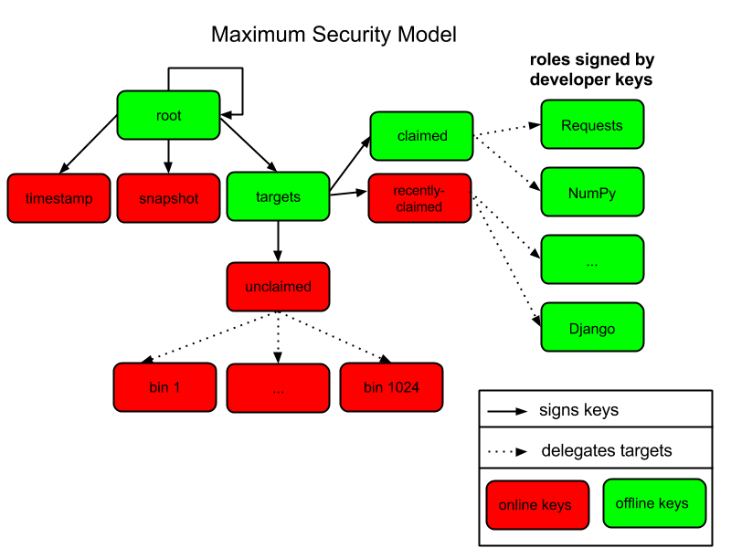

PEP 480 – Surviving a Compromise of PyPI: End-to-end signing of packages¶
- PEP
480
- Title
Surviving a Compromise of PyPI: End-to-end signing of packages
- Author
Trishank Karthik Kuppusamy <karthik at trishank.com>, Vladimir Diaz <vladimir.diaz at nyu.edu>, Justin Cappos <jcappos at nyu.edu>, Marina Moore <mm9693 at nyu.edu>
- BDFL-Delegate
Donald Stufft <donald at stufft.io>
- Discussions-To
Packaging category on Python Discourse <https://discuss.python.org/c/packaging>
- Status
Draft
- Type
Standards Track
- Requires
- Created
08-Oct-2014
Abstract¶
Proposed is an extension to PEP 458 that adds support for end-to-end signing and the maximum security model. End-to-end signing allows both PyPI and developers to sign for the distributions that are downloaded by clients. The minimum security model proposed by PEP 458 supports continuous delivery of distributions (because they are signed by online keys), but that model does not protect distributions in the event that PyPI is compromised. In the minimum security model, attackers who have compromised the signing keys stored on PyPI Infrastructure may sign for malicious distributions. The maximum security model, described in this PEP, retains the benefits of PEP 458 (e.g., immediate availability of distributions that are uploaded to PyPI), but additionally ensures that end-users are not at risk of installing forged software if PyPI is compromised.
This PEP requires some changes to the PyPI infrastructure, and some suggested changes for developers who wish to participate in end-to-end signing. These changes include updating the metadata layout from PEP 458 to include delegations to developer keys, adding a process to register developer keys with PyPI, and a change in the upload workflow for developers who take advantage of end-to-end signing. All of these changes are described in detail later in this PEP. Package managers that wish to take advantage of end-to-end signing do not need to do any additional work beyond what is required to consume metadata described in PEP 458.
This PEP discusses the changes made to PEP 458 but excludes its informational elements to primarily focus on the maximum security model. For example, an overview of The Update Framework or the basic mechanisms in PEP 458 are not covered here. The changes to PEP 458 include modifications to the snapshot process, key compromise analysis, auditing snapshots, and the steps that should be taken in the event of a PyPI compromise. The signing and key management process that PyPI MAY RECOMMEND is discussed but not strictly defined. How the release process should be implemented to manage keys and metadata is left to the implementors of the signing tools. That is, this PEP delineates the expected cryptographic key type and signature format included in metadata that MUST be uploaded by developers in order to support end-to-end verification of distributions.
PEP Status¶
The community discussed this PEP from 2014 to 2018. Due to the amount of work required to implement this PEP, discussion was deferred until after approval for the precursor step in PEP 458. As of mid-2020 PEP 458 is approved and implementation is in progress, and the PEP authors aim to gain approval so they can secure appropriate funding for implementation.
Rationale¶
PEP 458 1 proposes how PyPI should be integrated with The Update Framework (TUF) 2. It explains how modern package managers like pip can be made more secure, and the types of attacks that can be prevented if PyPI is modified on the server side to include TUF metadata. Package managers can reference the TUF metadata available on PyPI to download distributions more securely.
PEP 458 also describes the metadata layout of the PyPI repository and employs the minimum security model, which supports continuous delivery of projects and uses online cryptographic keys to sign the distributions uploaded by developers. Although the minimum security model guards against most attacks on software updaters 5 7, such as mix-and-match and extraneous dependencies attacks, it can be improved to support end-to-end signing and to prohibit forged distributions in the event that PyPI is compromised.
PEP 480 builds on PEP 458 by adding support for developer signing, and reducing the reliance on online keys to prevent malicious distributions. The main strength of PEP 458 and the minimum security model is the automated and simplified release process: developers may upload distributions and then have PyPI sign for their distributions. Much of the release process is handled in an automated fashion by online roles and this approach requires storing cryptographic signing keys on the PyPI infrastructure. Unfortunately, cryptographic keys that are stored online are vulnerable to theft. The maximum security model, proposed in this PEP, permits developers to sign for the distributions that they make available to PyPI users, and does not put end-users at risk of downloading malicious distributions if the online keys stored on PyPI infrastructure are compromised.
Threat Model¶
The threat model assumes the following:
Offline keys are safe and securely stored.
Attackers can compromise at least one of PyPI’s trusted keys that are stored online, and may do so at once or over a period of time.
Attackers can respond to client requests.
Attackers may control any number of developer keys for projects a client does not want to install.
Attackers are considered successful if they can cause a client to install (or leave installed) something other than the most up-to-date version of the software the client is updating. When an attacker is preventing the installation of updates, the attacker’s goal is that clients not realize that anything is wrong.
Definitions¶
The keywords “MUST”, “MUST NOT”, “REQUIRED”, “SHALL”, “SHALL NOT”, “SHOULD”, “SHOULD NOT”, “RECOMMENDED”, “MAY”, and “OPTIONAL” in this document are to be interpreted as described in RFC 2119 13.
This PEP focuses on integrating TUF with PyPI; however, the reader is encouraged to read about TUF’s design principles 2. It is also RECOMMENDED that the reader be familiar with the TUF specification 3, and PEP 458 1 (which this PEP is extending).
The following terms used in this PEP are defined in the Python Packaging Glossary 4: project, release, distribution.
Terms used in this PEP are defined as follows:
Distribution file: A versioned archive file that contains Python packages, modules, and other resource files that are used to distribute a release. The terms distribution file, distribution package 4, or simply distribution or package may be used interchangeably in this PEP.
Simple index: The HTML page that contains internal links to distribution files.
Target files: As a rule of thumb, target files are all files on PyPI whose integrity should be guaranteed with TUF. Typically, this includes distribution files, and PyPI metadata such as simple indices.
Roles: Roles in TUF encompass the set of actions a party is authorized to perform, including what metadata they may sign and which packages they are responsible for. There is one root role in PyPI. There are multiple roles whose responsibilities are delegated to them directly or indirectly by the root role. The term “top-level role” refers to the root role and any role delegated by the root role. Each role has a single metadata file that it is trusted to provide.
Metadata: Metadata are files that describe roles, other metadata, and target files.
Repository: A repository is a resource comprised of named metadata and target files. Clients request metadata and target files stored on a repository.
Consistent snapshot: A set of TUF metadata and target files that capture the complete state of all projects on PyPI as they existed at some fixed point in time.
Developer: Either the owner or maintainer of a project who is allowed to update TUF metadata, as well as distribution metadata and files for a given project.
Online key: A private cryptographic key that MUST be stored on the PyPI server infrastructure. This usually allows automated signing with the key. An attacker who compromises the PyPI infrastructure will be able to immediately read these keys.
Offline key: A private cryptographic key that MUST be stored independent of the PyPI server infrastructure. This prevents automated signing with the key. An attacker who compromises the PyPI infrastructure will not be able to immediately read these keys.
Threshold signature scheme: A role can increase its resilience to key compromises by specifying that at least t out of n keys are REQUIRED to sign its metadata. A compromise of t-1 keys is insufficient to compromise the role itself. Saying that a role requires (t, n) keys denotes the threshold signature property.
Maximum Security Model¶
The maximum security model permits developers to sign their projects and to upload signed metadata to PyPI. In the model proposed in this PEP, if the PyPI infrastructure were compromised, attackers would be unable to serve malicious versions of a claimed project without having access to that project’s developer key. Figure 1 depicts the changes made to the metadata layout of the minimum security model, namely that developer roles are now supported and that three new delegated roles exist: claimed, recently-claimed, and unclaimed. The bins role from the minimum security model has been renamed unclaimed and can contain any projects that have not been added to claimed. The unclaimed role functions just as before (i.e., as explained in PEP 458, projects added to this role are signed by PyPI with an online key). Offline keys provided by developers ensure the strength of the maximum security model over the minimum model. Although the minimum security model supports continuous delivery of projects, all projects are signed by an online key. That is, an attacker is able to corrupt packages in the minimum security model, but not in the maximum model, without also compromising a developer’s key.
Figure 1: An overview of the metadata layout in the maximum security model. The maximum security model supports continuous delivery and survivable key compromise.
Projects that are signed by developers and uploaded to PyPI for the first time are added to the recently-claimed role. The recently-claimed role uses an online key, so projects uploaded for the first time are immediately available to clients. After some time has passed, PyPI administrators MAY periodically move (e.g., every month) projects listed in recently-claimed to the claimed role for maximum security. The claimed role uses an offline key, thus projects added to this role cannot be easily forged if PyPI is compromised.
The recently-claimed role is separate from the unclaimed role for usability and efficiency, not security. If new project delegations were prepended to unclaimed metadata, unclaimed would need to be re-downloaded every time a project obtained a key. By separating out new projects, the amount of data retrieved is reduced. From a usability standpoint, it also makes it easier for administrators to see which projects are now claimed. This information is needed when moving keys from recently-claimed to claimed, which is discussed in more detail in the “Producing Consistent Snapshots” section.
End-to-End Signing¶
End-to-end signing allows both PyPI and developers to sign for the metadata downloaded by clients. PyPI is trusted to make uploaded projects available to clients (PyPI signs the metadata for this part of the process), and developers sign the distributions that they upload to PyPI.
In order to delegate trust to a project, developers are required to submit a public key to PyPI. PyPI takes the project’s public key and adds it to parent metadata that PyPI then signs. After the initial trust is established, developers are required to sign distributions that they upload to PyPI using the public key’s corresponding private key. The signed TUF metadata that developers upload to PyPI includes information like the distribution’s file size and hash, which package managers use to verify distributions that are downloaded.
The practical implications of end-to-end signing is the extra administrative work needed to delegate trust to a project, and the signed metadata that developers MUST upload to PyPI along with the distribution. Specifically, PyPI is expected to periodically sign metadata with an offline key by adding projects to the claimed metadata file and signing it. In contrast, projects are only ever signed with an online key in the minimum security model. End-to-end signing does require manual intervention to delegate trust (i.e., to sign metadata with an offline key), but this is a one-time cost and projects have stronger protections against PyPI compromises thereafter.
Metadata Signatures, Key Management, and Signing Distributions¶
This section discusses the tools, signature scheme, and signing methods that PyPI MAY recommend to implementors of the signing tools. Developers are expected to use these tools to sign and upload distributions to PyPI. To summarize the RECOMMENDED tools and schemes discussed in the subsections below, developers MAY generate cryptographic keys and sign metadata (with the Ed25519 signature scheme) in some automated fashion, where the metadata includes the information required to verify the authenticity of the distribution. Developers then upload metadata to PyPI, where it will be available for download by package managers such as pip (i.e., package managers that support TUF metadata). The entire process is transparent to the end-users (using a package manager that supports TUF) that download distributions from PyPI.
The first three subsections (Cryptographic Signature Scheme, Cryptographic Key Files, and Key Management) cover the cryptographic components of the developer release process. That is, which key type PyPI supports, how keys may be stored, and how keys may be generated. The two subsections that follow the first three discuss the PyPI modules that SHOULD be modified to support TUF metadata. For example, Twine and Distutils are two projects that SHOULD be modified. Finally, the last subsection goes over the automated key management and signing solution that is RECOMMENDED for the signing tools.
TUF’s design is flexible with respect to cryptographic key types, signatures, and signing methods. The tools, modification, and methods discussed in the following sections are RECOMMENDATIONS for the implementors of the signing tools.
Cryptographic Signature Scheme: Ed25519¶
The package manager (pip) shipped with CPython MUST work on non-CPython interpreters and cannot have dependencies that have to be compiled (i.e., the PyPI+TUF integration MUST NOT require compilation of C extensions in order to verify cryptographic signatures). Verification of signatures MUST be done in Python, and verifying RSA 11 signatures in pure-Python may be impractical due to speed. Therefore, PyPI MAY use the Ed25519 14 signature scheme.
Ed25519 12 is a public-key signature system that uses small cryptographic signatures and keys. A pure-Python implementation 15 of the Ed25519 signature scheme is available. Verification of Ed25519 signatures is fast even when performed in Python.
Cryptographic Key Files¶
The implementation MAY encrypt key files with AES-256-CTR-Mode and strengthen passwords with PBKDF2-HMAC-SHA256 (100K iterations by default, but this may be overridden by the developer). The current Python implementation of TUF can use any cryptographic library (support for PyCA cryptography will be added in the future), may override the default number of PBKDF2 iterations, and the KDF tweaked to taste.
Key Management: miniLock¶
An easy-to-use key management solution is needed. One solution is to derive a private key from a password so that developers do not have to manage cryptographic key files across multiple computers. miniLock 16 is an example of how this can be done. Developers may view the cryptographic key as a secondary password. miniLock also works well with a signature scheme like Ed25519, which only needs a very small key.
Third-party Upload Tools: Twine¶
Third-party tools like Twine 17 MAY be modified (if they wish to support distributions that include TUF metadata) to sign and upload developer projects to PyPI. Twine is a utility for interacting with PyPI that uses TLS to upload distributions, and prevents MITM attacks on usernames and passwords.
Build backends¶
Build backends MAY be modified to sign metadata and to upload signed distributions to PyPI.
Automated Signing Solution¶
An easy-to-use key management solution is RECOMMENDED for developers. One approach is to generate a cryptographic private key from a user password, akin to miniLock. Although developer signatures can remain optional, this approach may be inadequate due to the great number of potentially unsigned dependencies each distribution may have. If any one of these dependencies is unsigned, it negates any benefit the project gains from signing its own distribution (i.e., attackers would only need to compromise one of the unsigned dependencies to attack end-users). Requiring developers to manually sign distributions and manage keys is expected to render key signing an unused feature.
A default, PyPI-mediated key management and package signing solution that is transparent 18 to developers and does not require a key escrow (sharing of encrypted private keys with PyPI) is RECOMMENDED for the signing tools. Additionally, the signing tools SHOULD circumvent the sharing of private keys across multiple machines of each developer.
The following outlines an automated signing solution that a new developer MAY follow to upload a distribution to PyPI:
Register a PyPI project.
Enter a secondary password (independent of the PyPI user account password).
Optional: Add a new identity to the developer’s PyPI user account from a second machine (after a password prompt).
Upload project.
Step 1 is the normal procedure followed by developers to register a PyPI project 19.
Step 2 generates an encrypted key file (private), uploads an Ed25519 public key to PyPI, and signs the TUF metadata that is generated for the distribution.
Optionally adding a new identity from a second machine, by simply entering a password, in step 3 also generates an encrypted private key file and uploads an Ed25519 public key to PyPI. Separate identities MAY be created to allow a developer, or other project maintainers, to sign releases on multiple machines. An existing verified identity (its public key is contained in project metadata or has been uploaded to PyPI) signs for new identities. By default, project metadata has a signature threshold of “1” and other verified identities may create new releases to satisfy the threshold.
Step 4 uploads the distribution file and TUF metadata to PyPI. The “Snapshot Process” section discusses in detail the procedure followed by developers to upload a distribution to PyPI.
Generation of cryptographic files and signatures is transparent to the developers in the default case: developers need not be aware that packages are automatically signed. However, the signing tools should be flexible; a single project key may also be shared between multiple machines if manual key management is preferred (e.g., ssh-copy-id).
The repository 20 and developer 21 TUF tools currently support all of the recommendations previously mentioned, except for the automated signing solution, which SHOULD be added to Distlib, Twine, and other third-party signing tools. The automated signing solution calls available repository tool functions to sign metadata and to generate the cryptographic key files.
Snapshot Process¶
The snapshot process is fairly simple and SHOULD be automated. The snapshot process MUST keep in memory the latest working set of root, targets, and delegated roles. Every minute or so the snapshot process will sign for this latest working set. (Recall that project uploads continuously inform the snapshot process about the latest delegated metadata in a concurrency-safe manner. The snapshot process will actually sign for a copy of the latest working set while the latest working set in memory will be updated with information that is continuously communicated by the project transaction processes.) The snapshot process MUST generate and sign new timestamp metadata that will vouch for the metadata (root, targets, and delegated roles) generated in the previous step. Finally, the snapshot process MUST make available to clients the new timestamp and snapshot metadata representing the latest snapshot.
A claimed or recently-claimed project will need to upload in its transaction to PyPI not just targets (a simple index as well as distributions) but also TUF metadata. The project MAY do so by uploading a ZIP file containing two directories, /metadata/ (containing delegated targets metadata files) and /targets/ (containing targets such as the project simple index and distributions that are signed by the delegated targets metadata).
Whenever the project uploads metadata or target files to PyPI, PyPI SHOULD check the project TUF metadata for at least the following properties:
A threshold number of the developers keys registered with PyPI by that project MUST have signed for the delegated targets metadata file that represents the “root” of targets for that project (e.g. metadata/targets/ project.txt).
The signatures of delegated targets metadata files MUST be valid.
The delegated targets metadata files MUST NOT have expired.
The delegated targets metadata MUST be consistent with the targets.
A delegator MUST NOT delegate targets that were not delegated to itself by another delegator.
A delegatee MUST NOT sign for targets that were not delegated to itself by a delegator.
If PyPI chooses to check the project TUF metadata, then PyPI MAY choose to reject publishing any set of metadata or target files that do not meet these requirements.
PyPI MUST enforce access control by ensuring that each project can only write to the TUF metadata for which it is responsible. It MUST do so by ensuring that project upload processes write to the correct metadata as well as correct locations within those metadata. For example, a project upload process for an unclaimed project MUST write to the correct target paths in the correct delegated unclaimed metadata for the targets of the project.
On rare occasions, PyPI MAY wish to extend the TUF metadata format for projects in a backward-incompatible manner. Note that PyPI will NOT be able to automatically rewrite existing TUF metadata on behalf of projects in order to upgrade the metadata to the new backward-incompatible format because this would invalidate the signatures of the metadata as signed by developer keys. Instead, package managers SHOULD be written to recognize and handle multiple incompatible versions of TUF metadata so that claimed and recently-claimed projects could be offered a reasonable time to migrate their metadata to newer but backward-incompatible formats. One mechanism for handling this version change is described in TAP 14 22.
If PyPI eventually runs out of disk space to produce a new consistent snapshot, then PyPI MAY then use something like a “mark-and-sweep” algorithm to delete sufficiently outdated consistent snapshots. That is, only outdated metadata like timestamp and snapshot that are no longer used are deleted. Specifically, in order to preserve the latest consistent snapshot, PyPI would walk objects – beginning from the root (timestamp) – of the latest consistent snapshot, mark all visited objects, and delete all unmarked objects. The last few consistent snapshots may be preserved in a similar fashion. Deleting a consistent snapshot will cause clients to see nothing except HTTP 404 responses to any request for a target of the deleted consistent snapshot. Clients SHOULD then retry (as before) their requests with the latest consistent snapshot.
All package managers that support TUF metadata MUST be modified to download every metadata and target file (except for timestamp metadata) by including, in the request for the file, the cryptographic hash of the file in the filename. Following the filename convention RECOMMENDED in the next subsection, a request for the file at filename.ext will be transformed to the equivalent request for the file at digest.filename.
Finally, PyPI SHOULD use a transaction log 23 to record project transaction processes and queues so that it will be easier to recover from errors after a server failure.
Producing Consistent Snapshots¶
PyPI is responsible for updating, depending on the project, either the claimed, recently-claimed, or unclaimed metadata and associated delegated metadata. Every project MUST upload its set of metadata and targets in a single transaction. The uploaded set of files is called the “project transaction.” How PyPI MAY validate files in a project transaction is discussed in a later section. The focus of this section is on how PyPI will respond to a project transaction.
Every metadata and target file MUST include in its filename the hex digest 24 of its BLAKE2b-256 25 hash, which PyPI may prepend to filenames after the files have been uploaded. For this PEP, it is RECOMMENDED that PyPI adopt a simple convention of the form: digest.filename, where filename is the original filename without a copy of the hash, and digest is the hex digest of the hash.
When an unclaimed project uploads a new transaction, a project transaction process MUST add all new target files and relevant delegated unclaimed metadata. The project upload process MUST inform the snapshot process about new delegated unclaimed metadata.
When a recently-claimed project uploads a new transaction, a project upload process MUST add all new target files and delegated targets metadata for the project. If the project is new, then the project upload process MUST also add new recently-claimed metadata with the public keys (which MUST be part of the transaction) for the project. recently-claimed projects have a threshold value of “1” set by the upload process. Finally, the project upload process MUST inform the snapshot process about new recently-claimed metadata, as well as the current set of delegated targets metadata for the project.
The upload process for a claimed project is slightly different in that PyPI administrators periodically move (a manual process that MAY occur every two weeks to a month) projects from the recently-claimed role to the claimed role. (Moving a project from recently-claimed to claimed is a manual process because PyPI administrators have to use an offline key to sign the claimed project’s distribution.) A project upload process MUST then add new recently-claimed and claimed metadata to reflect this migration. As is the case for a recently-claimed project, the project upload process MUST always add all new target files and delegated targets metadata for the claimed project. Finally, the project upload process MUST inform the consistent snapshot process about new recently-claimed or claimed metadata, as well as the current set of delegated targets metadata for the project.
Project upload processes SHOULD be automated, except when PyPI administrators move a project from the recently-claimed role to the claimed role. Project upload processes MUST also be applied atomically: either all metadata and target files – or none of them – are added. The project transaction processes and snapshot process SHOULD work concurrently. Finally, project upload processes SHOULD keep in memory the latest claimed, recently-claimed, and unclaimed metadata so that they will be correctly updated in new consistent snapshots.
The queue MAY be processed concurrently in order of appearance, provided that the following rules are observed:
No pair of project upload processes may concurrently work on the same project.
No pair of project upload processes may concurrently work on unclaimed projects that belong to the same delegated unclaimed role.
No pair of project upload processes may concurrently work on new recently-claimed projects.
No pair of project upload processes may concurrently work on new claimed projects.
No project upload process may work on a new claimed project while another project upload process is working on a new recently-claimed project and vice versa.
These rules MUST be observed to ensure that metadata is not read from or written to inconsistently.
Auditing Snapshots¶
If a malicious party compromises PyPI, they can sign arbitrary files with any of the online keys. The roles with offline keys (i.e., root and targets) are still protected. To safely recover from a repository compromise, snapshots should be audited to ensure that files are only restored to trusted versions.
When a repository compromise has been detected, the integrity of three types of information must be validated:
If the online keys of the repository have been compromised, they can be revoked by having the targets role sign new metadata, delegated to a new key.
If the role metadata on the repository has been changed, this will impact the metadata that is signed by online keys. Any role information created since the compromise should be discarded. As a result, developers of new projects will need to re-register their projects.
If the packages themselves may have been tampered with, they can be validated using the stored hash information for packages that existed in trusted metadata before the compromise. Also, new distributions that are signed by developers in the claimed role may be safely retained. However, any distributions signed by developers in the recently-claimed or unclaimed roles should be discarded.
In order to safely restore snapshots in the event of a compromise, PyPI SHOULD maintain a small number of its own mirrors to copy PyPI snapshots according to some schedule. The mirroring protocol can be used immediately for this purpose. The mirrors must be secured and isolated such that they are responsible only for mirroring PyPI. The mirrors can be checked against one another to detect accidental or malicious failures.
Another approach is to periodically generate the cryptographic hash of each snapshot and tweet it. For example, upon receiving the tweet, a user comes forward with the actual metadata and the repository maintainers are then able to verify the metadata’s cryptographic hash. Alternatively, PyPI may periodically archive its own versions of snapshots rather than rely on externally provided metadata. In this case, PyPI SHOULD take the cryptographic hash of every package on the repository and store this data on an offline device. If any package hash has changed, this indicates an attack has occurred.
Attacks that serve different versions of metadata or that freeze a version of a package at a specific version can be handled by TUF with techniques such as implicit key revocation and metadata mismatch detection 2.
Key Compromise Analysis¶
This PEP has covered the maximum security model, the TUF roles that should be added to support continuous delivery of distributions, how to generate and sign the metadata of each role, and how to support distributions that have been signed by developers. The remaining sections discuss how PyPI SHOULD audit repository metadata, and the methods PyPI can use to detect and recover from a PyPI compromise.
Table 1 summarizes a few of the attacks possible when a threshold number of private cryptographic keys (belonging to any of the PyPI roles) are compromised. The leftmost column lists the roles (or a combination of roles) that have been compromised, and the columns to the right show whether the compromised roles leaves clients susceptible to malicious updates, freeze attacks, or metadata inconsistency attacks.
Role Compromise |
Malicious Updates |
Freeze Attack |
Metadata Inconsistency Attacks |
|---|---|---|---|
timestamp |
NO snapshot and targets or any of the delegated roles need to cooperate |
YES limited by earliest root, targets, or bin metadata expiry time |
NO snapshot needs to cooperate |
snapshot |
NO timestamp and targets or any of the delegated roles need to cooperate |
NO timestamp needs to cooperate |
NO timestamp needs to cooperate |
timestamp AND snapshot |
NO targets or any of the delegated roles need to cooperate |
YES limited by earliest root, targets, or bin metadata expiry time |
YES limited by earliest root, targets, or bin metadata expiry time |
targets OR claimed OR recently-claimed OR unclaimed OR project |
NO timestamp and snapshot need to cooperate |
NOT APPLICABLE need timestamp and snapshot |
NOT APPLICABLE need timestamp and snapshot |
(timestamp AND snapshot) AND project |
YES |
YES limited by earliest root, targets, or bin metadata expiry time |
YES limited by earliest root, targets, or bin metadata expiry time |
(timestamp AND snapshot) AND (recently-claimed OR unclaimed) |
YES but only of projects not delegated by claimed |
YES limited by earliest root, targets, claimed, recently-claimed, project, or unclaimed metadata expiry time |
YES limited by earliest root, targets, claimed, recently-claimed, project, or unclaimed metadata expiry time |
(timestamp AND snapshot) AND (targets OR claimed) |
YES |
YES limited by earliest root, targets, claimed, recently-claimed, project, or unclaimed metadata expiry time |
YES limited by earliest root, targets, claimed, recently-claimed, project, or unclaimed metadata expiry time |
root |
YES |
YES |
YES |
Table 1: Attacks that are possible by compromising certain combinations of role keys. In September 2013 26, it was shown how the latest version (at the time) of pip was susceptible to these attacks and how TUF could protect users against them 8. Roles signed by offline keys are in bold.
Note that compromising targets or any delegated role (except for project targets metadata) does not immediately allow an attacker to serve malicious updates. The attacker must also compromise the timestamp and snapshot roles (which are both online and therefore more likely to be compromised). This means that in order to launch any attack, one must not only be able to act as a man-in-the-middle, but also compromise the timestamp key (or compromise the root keys and sign a new timestamp key). To launch any attack other than a freeze attack, one must also compromise the snapshot key. Finally, a compromise of the PyPI infrastructure MAY introduce malicious updates to recently-claimed projects because the keys for these roles are online.
In the Event of a Key Compromise¶
A key compromise means that a threshold of keys belonging to developers or the roles on PyPI, as well as the PyPI infrastructure, have been compromised and used to sign new metadata on PyPI.
If a threshold number of developer keys of a project have been compromised, the project MUST take the following steps:
The project metadata and targets MUST be restored to the last known good consistent snapshot where the project was not known to be compromised. This can be done by developers repackaging and resigning all targets with the new keys.
The project’s metadata MUST have its version numbers incremented, expiry times suitably extended, and signatures renewed.
Whereas PyPI MUST take the following steps:
Revoke the compromised developer keys from the recently-claimed or claimed role. This is done by replacing the compromised developer keys with newly issued developer keys.
A new timestamped consistent snapshot MUST be issued.
If a threshold number of timestamp, snapshot, recently-claimed, or unclaimed keys have been compromised, then PyPI MUST take the following steps:
Revoke the timestamp, snapshot, and targets role keys from the root role. This is done by replacing the compromised timestamp, snapshot, and targets keys with newly issued keys.
Revoke the recently-claimed and unclaimed keys from the targets role by replacing their keys with newly issued keys. Sign the new targets role metadata and discard the new keys (because, as we explained earlier, this increases the security of targets metadata).
Clear all targets or delegations in the recently-claimed role and delete all associated delegated targets metadata. Recently registered projects SHOULD register their developer keys again with PyPI.
All targets of the recently-claimed and unclaimed roles SHOULD be compared with the last known good consistent snapshot where none of the timestamp, snapshot, recently-claimed, or unclaimed keys were known to have been compromised. Added, updated, or deleted targets in the compromised consistent snapshot that do not match the last known good consistent snapshot SHOULD be restored to their previous versions. After ensuring the integrity of all unclaimed targets, the unclaimed metadata MUST be regenerated.
The recently-claimed and unclaimed metadata MUST have their version numbers incremented, expiry times suitably extended, and signatures renewed.
A new timestamped consistent snapshot MUST be issued.
This would preemptively protect all of these roles even though only one of them may have been compromised.
If a threshold number of the targets or claimed keys have been compromised, then there is little that an attacker would be able do without the timestamp and snapshot keys. In this case, PyPI MUST simply revoke the compromised targets or claimed keys by replacing them with new keys in the root and targets roles, respectively.
If a threshold number of the timestamp, snapshot, and claimed keys have been compromised, then PyPI MUST take the following steps in addition to the steps taken when either the timestamp or snapshot keys are compromised:
Revoke the claimed role keys from the targets role and replace them with newly issued keys.
All project targets of the claimed roles SHOULD be compared with the last known good consistent snapshot where none of the timestamp, snapshot, or claimed keys were known to have been compromised. Added, updated, or deleted targets in the compromised consistent snapshot that do not match the last known good consistent snapshot MAY be restored to their previous versions. After ensuring the integrity of all claimed project targets, the claimed metadata MUST be regenerated.
The claimed metadata MUST have their version numbers incremented, expiry times suitably extended, and signatures renewed.
Following these steps would preemptively protect all of these roles even though only one of them may have been compromised.
If a threshold number of root keys have been compromised, then PyPI MUST take the steps taken when the targets role has been compromised. All of the root keys must also be replaced.
It is also RECOMMENDED that PyPI sufficiently document compromises with security bulletins. These security bulletins will be most informative when users of pip-with-TUF are unable to install or update a project because the keys for the timestamp, snapshot, or root roles are no longer valid. Users could then visit the PyPI web site to consult security bulletins that would help to explain why users are no longer able to install or update, and then take action accordingly. When a threshold number of root keys have not been revoked due to a compromise, then new root metadata may be safely updated because a threshold number of existing root keys will be used to sign for the integrity of the new root metadata. TUF clients will be able to verify the integrity of the new root metadata with a threshold number of previously known root keys. This will be the common case. In the worst case, where a threshold number of root keys have been revoked due to a compromise, an end-user may choose to update new root metadata with out-of-band 27 mechanisms.
Appendix A: PyPI Build Farm and End-to-End Signing¶
PyPI administrators intend to support a central build farm. The PyPI build farm will auto-generate a Wheel 28, for each distribution that is uploaded by developers, on PyPI infrastructure and on supported platforms. Package managers will likely install projects by downloading these PyPI Wheels (which can be installed much faster than source distributions) rather than the source distributions signed by developers. The implications of having a central build farm with end-to-end signing SHOULD be investigated before the maximum security model is implemented.
An issue with a central build farm and end-to-end signing is that developers are unlikely to sign Wheel distributions once they have been generated on PyPI infrastructure. However, generating wheels from source distributions that are signed by developers can still be beneficial, provided that building Wheels is a deterministic process. If deterministic builds are infeasible, developers may delegate trust of these wheels to a PyPI role that signs for wheels with an online key.
References¶
- 1(1,2)
- 2(1,2,3)
https://theupdateframework.io/papers/survivable-key-compromise-ccs2010.pdf
- 3
https://github.com/theupdateframework/tuf/blob/develop/docs/tuf-spec.txt
- 4(1,2)
- 5
https://github.com/theupdateframework/pip/wiki/Attacks-on-software-repositories
- 6
https://mail.python.org/pipermail/distutils-sig/2013-September/022773.html
- 7
https://theupdateframework.io/papers/attacks-on-package-managers-ccs2008.pdf
- 8
https://mail.python.org/pipermail/distutils-sig/2013-September/022755.html
- 9
- 10
https://mail.python.org/pipermail/distutils-sig/2013-August/022154.html
- 11
- 12
- 13
- 14
- 15
- 16
- 17
- 18
https://en.wikipedia.org/wiki/Transparency_%28human%E2%80%93computer_interaction%29
- 19
- 20
https://github.com/theupdateframework/tuf/blob/develop/tuf/README.md
- 21
https://github.com/theupdateframework/tuf/blob/develop/tuf/README-developer-tools.md
- 22
https://github.com/theupdateframework/taps/blob/master/tap14.md
- 23
- 24
http://docs.python.org/2/library/hashlib.html#hashlib.hash.hexdigest
- 25
- 26
https://mail.python.org/pipermail/distutils-sig/2013-September/022755.html
- 27
- 28
Acknowledgements¶
This material is based upon work supported by the National Science Foundation under Grants No. CNS-1345049 and CNS-0959138. Any opinions, findings, and conclusions or recommendations expressed in this material are those of the author(s) and do not necessarily reflect the views of the National Science Foundation.
We thank Nick Coghlan, Daniel Holth, Donald Stufft, Sumana Harihareswara, and the distutils-sig community in general for helping us to think about how to usably and efficiently integrate TUF with PyPI.
Roger Dingledine, Sebastian Hahn, Nick Mathewson, Martin Peck and Justin Samuel helped us to design TUF from its predecessor Thandy of the Tor project.
We appreciate the efforts of Konstantin Andrianov, Geremy Condra, Zane Fisher, Justin Samuel, Tian Tian, Santiago Torres, John Ward, and Yuyu Zheng to develop TUF.
Copyright¶
This document has been placed in the public domain.